Fabricación de placas
Para la realización de las placas se necesita el siguiente material:
- |
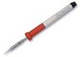 Soldador: Para la mayoría de los casos interesa que sea de potencia media, entre 40W y 100W, del tipo de lápiz (los de pistola no sirven para esto), normalmente se hace todo con uno de 40W pero cuando tenemos que estañar conectores y masas podriamos necesitar el de 100W, a ser posible con la carcasa conectada a tierra, con punta de aleación de larga duración mejor que de cobre, de unos 2mm de grosor (en la punta). Yo utilizo y recomiendo el JBC. |
- |
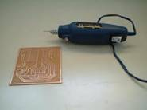 Taladro miniatura: Se pueden encontrar con gran variedad de precios en tiendas de material para modelismo o bricolaje. La única característica que yo considero imprescindible es que el mandril (porta brocas) sea de buena calidad y garantice el correcto centrado de las brocas. Algunos modelos baratos llevan un mandril parecido un portaminas cuyos resultados son muy malos. Mucho mejor si es como el de un taladro grande pero en miniatura, es decir, con 3 garras que se cierran sobre la broca en paralelo. Debe incluir un adaptador a la tensión de red. Marcas fiables, entre otras, son Dremel o Proxxon. Yo utilizo este último. |
- |
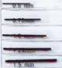 Brocas: Imprescindibles las de 0.7mm, que sirven para la mayoría de componentes, y varias de otros tamaños para ciertos componentes de patas más gruesas, entre 0.9mm y 2mm y habrá que substituirlas cuando pierdan filo o se partan. Las brocas poco afiladas se descentran con facilidad y producen agujeros con una rebaba muy acusada. |
- |
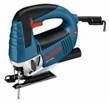 Sierra: Para cortar la placa virgen (es más barato comprar piezas grandes e ir cortando trozos según necesidades). Sirve una simple segueta de marquetería 4 euros, pero yo utilizo una sierra de calar montada invertida sobre un banco, con una hoja para metales. Los precios son muy variables, pero una sierra de calar normalita, junto con la sujeción para montarla invertida. |
- |
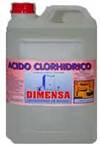 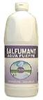 Aguafuerte: La utilizaremos para atacar la placa, ya que reacciona con el cobre destruyéndolo. Se vende en droguerías y grandes superficies en botellas de |
- |
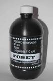 Agua oxigenada: La utilizaremos para activar el aguafuerte en el atacado. Se puede comprar en droguerías, grandes superficies y farmacias (más cara). Se trata de peróxido de hidrógeno de 10 volúmenes y se encuentra en botes de 250ml, 500ml ó 1000ml, pero no es conveniente comprarlo en botes grandes, porque pierde actividad al contacto con el aire, así que si dejamos un restillo en una botella de un litro unos días, se convertirá en agua. Los botes de un cuarto de litro cuestan unos 60 céntimos, es decir, 2,4 euros por litro. Se utilizará en la misma proporción que el aguafuerte, así que también sale barato, yo recomiendo comprarla de 110 volúmenes, pero hay que tener cuidado al manipularla ya que quema pero al ser tan concentrada cunde mucho mas. |
- |
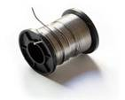 Estaño para soldar: Es en realidad una mezcla de estaño, plata, plomo y mercurio en distintas proporciones, y suele llevar añadida una resina detergente para que a la vez que se suelda se limpien las zonas soldadas, de forma que se adhiera mejor. Viene en bobinas de distintos pesos, desde 100g a 1Kg, y para electrónica es recomendable que sea de buena calidad y fino, de 1mm de diámetro. Cuesta unos 18 euros por kilogramo, pero con un rollo de 500g tienes para muchísimos circuitos. |
- |
Cubeta para atacado: Yo recomiendo un barreño cuadrado de plástico (mucho más barato que una cubeta de laboratorio) de unos 10cm de fondo y de aproximadamente 20cm x 20cm (tamaño cuartilla), dependiendo del tamaño de la placa. |
- |
Jarra para medida de líquidos: Sirve una de cocina, de las que llevan
una graduación para líquidos, al menos de 100 en 100 ml. Se encuentran en los
“todo a
|
Como vamos a realizar solo una unidad vamos a indicar la forma más sencilla de hacer prototipos.
Primero tenemos que conseguir el fotolito, para estos casos lo mejor es ir a los de tipo pegatina, para ello lo mejor es conseguir un archivo de calidad donde sean fiables las medidas, por ejemplo tipo Corel draw con extensión, *.cdr.
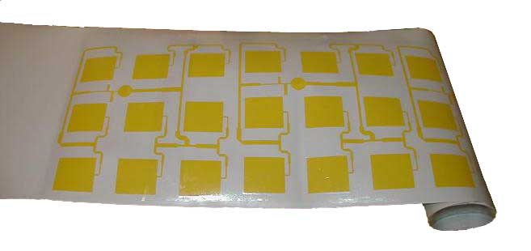
Este archivo lo llevamos a una tienda de serigrafía y rótulos y nos lo hacen tipo al de la imagen superior, vamos a una tienda de electrónica y compramos la placa de circuito impreso para este tipo de fotolito no tiene que ser del tipo fotosensible. Cogemos la placa y la limpiamos con estropajo tipo nanas o con lana de acero, también vale lija de agua, la limpiamos bien para que pegue la pegatina.
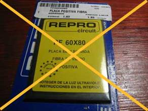 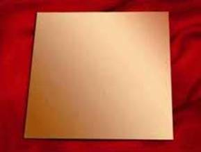 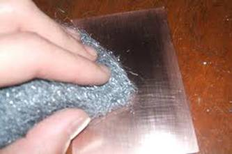
A continuación pegamos la pegatina en la placa y nos queda como en la imagen inferior,
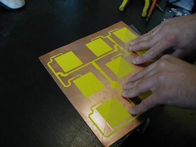 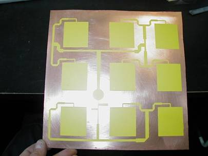
Preparamos la mezcla del acido, para lo cual mezclamos al 50% el agua oxigenada y el aguafuerte en la cubeta. La cantidad a preparar será la necesaria para cubrir la placa y que la tape con 1 cm. Recordamos que solo se podrá aprovechar durante 1 hora aproximadamente, después de este tiempo pierde muchas propiedades de ataque. Metemos la placa en la cubeta donde tenemos mezclado el agua oxigenada y el aguafuerte. Cuando veamos que ha desaparecido el cobre la sacamos, no suele tardar mas de 1 minuto, dependiendo de la concentración de acido clorhídrico del aguafuerte y de los volúmenes de concentración del agua oxigenada.
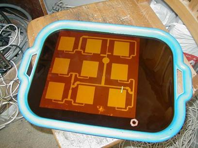 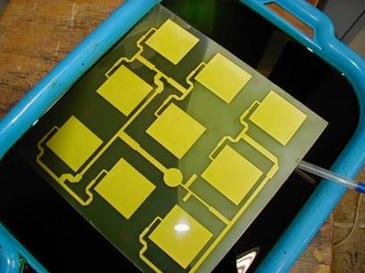
Lavamos rápidamente la placa con agua y la limpiamos con la lana de acero “nanas ó lija de agua” y entonces solo nos queda su mecanizado “taladros y corte para ajustar sus medidas “, realizamos las soldaduras pertinentes y damos una capa de barniz para proteger el cobre, entonces procedemos a su montaje.
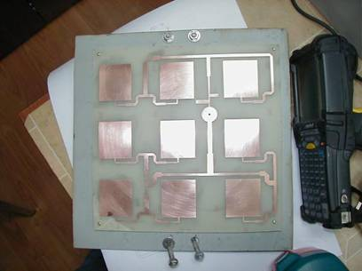 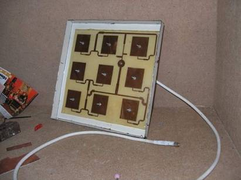
Y eso es todo espero que este manual les haya servido de ayuda.